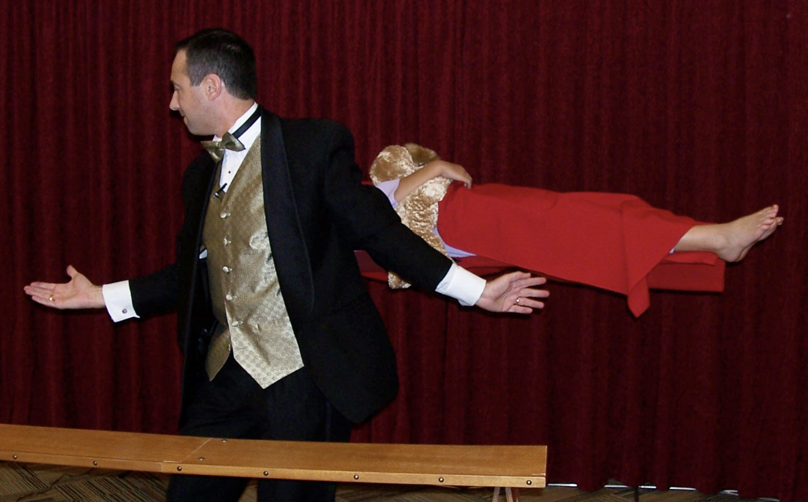
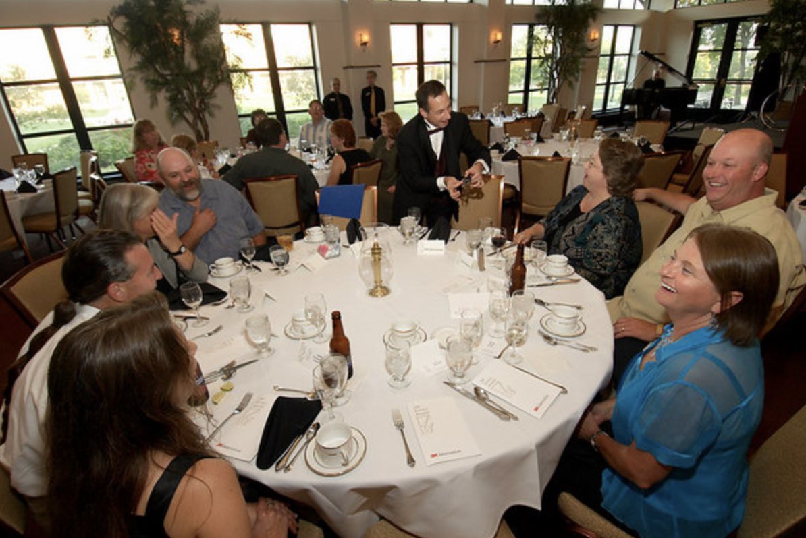
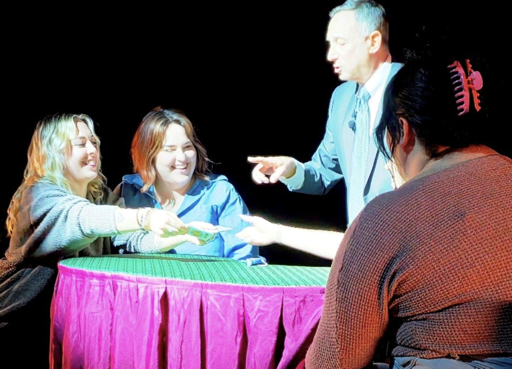
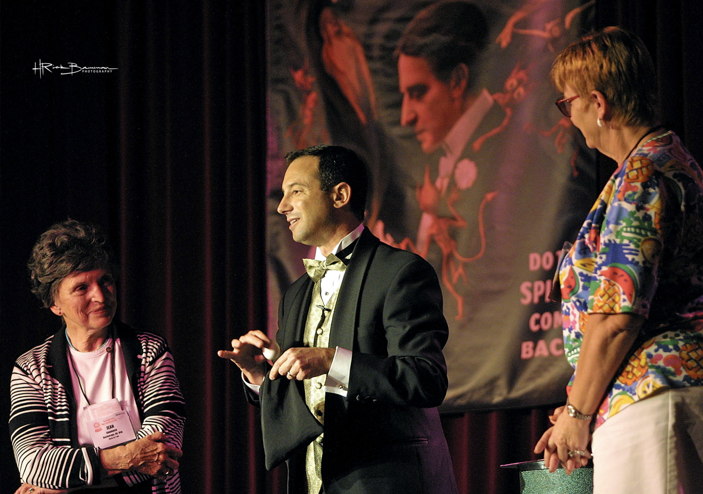
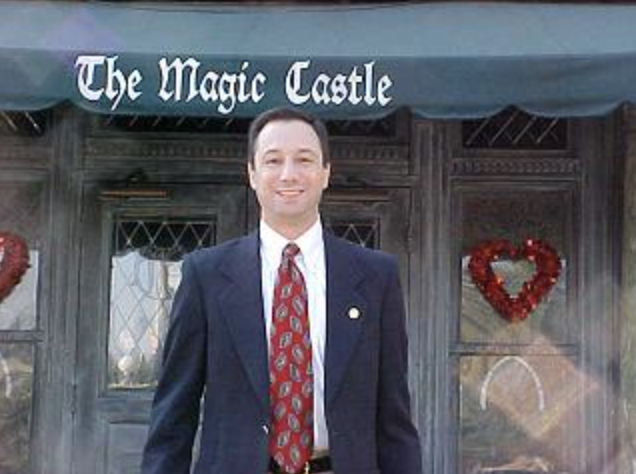

Gallery
Faces mid-disbelief
Stage, close-up, and the reactions in between. High-resolution files available for press and event programmes — more photos to come.
Stage, close-up, and the reactions in between. High-resolution files available for press and event programmes — more photos to come.






